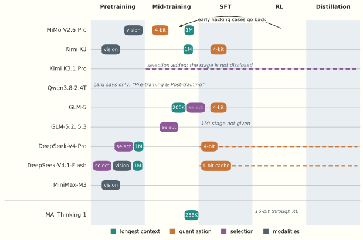
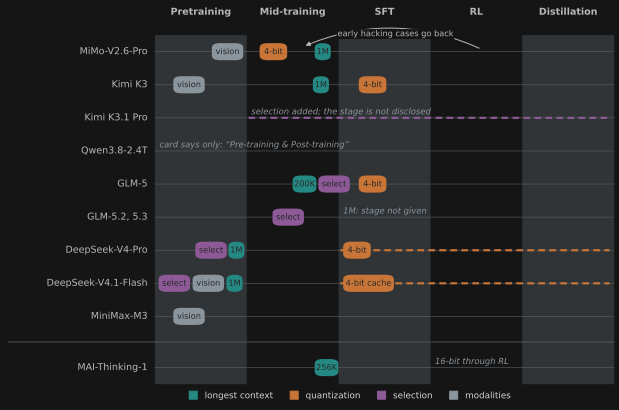

Filling the Stores
The open frontier, part 2: how the 2026 models are trained, from what the labs disclose
This is the second of two essays on the language models of 2026. The first covers how they are built, and this one covers how they are trained. It uses the first essay’s vocabulary of stores, and its worked examples continue that essay’s numbering.
Two files sit side by side on Hugging Face. GLM-5.2 and GLM-5.3 each hold 753,329,940,480 parameters, under the same names, in the same layers. Yet the card of the second scores it at 66.9 on DeepSWE, a benchmark of software-engineering agents, against 46.2 for the first. It explains the gain in one sentence: “GLM-5.3 uses the same base model as GLM-5.2 — every gain comes from post-training.” The accompanying post is blunter: “Scaling post-training is all we did for GLM-5.3.”
Post-training, the last stages of a run, can be a small share of its tokens. MiMo-V2.6-Pro saw 30 trillion tokens in pretraining. Its reinforcement learning then ran for thirty steps of about 3 billion tokens each, roughly a third of a percent of that budget, at a reported cost of $2.6 million. Over those thirty steps its score on the same benchmark rose from 58.4 to 72.6.
Every Layer a Store took the weights as given and asked where a prompt goes. This essay asks how the weights got their contents. They are written in several passes, by processes that differ in what they optimize and what they read, and each pass edits what the earlier ones wrote. Each new component of 2026 also has a place in that sequence: there are stages at which it can be added, and stages at which adding it hurts. The sequence is not a straight line either, because the labs tune early stages by what survives the late ones.
Almost everything here rests on what the labs chose to say, so the essay’s evidence is open process, not open weights. The first essay followed seven open-weight checkpoints. An eighth model joins them here: Microsoft’s MAI-Thinking-1, whose weights are closed and whose 109-page report is the fullest account of a training pipeline we have. Section 6 explains why the two kinds of openness are different goods and why the questions left open need both.
1. The stages, kept apart
Six kinds of training recur in the reports, under varying names. SFT, RL and distillation are grouped as post-training.
- Pretraining predicts the next token across a large mixture of data. It writes most of what the model will ever know.
- Mid-training keeps the objective and changes the data, usually toward code and reasoning, and often lengthens the context. Kimi K3’s report calls the same phase “cooldown”. MAI-Thinking-1 draws its mid-training data from the pretraining corpus, filtered and reweighted to 35 percent mathematics and STEM and 55 percent code. MiMo adds agent trajectories.
- Supervised fine-tuning (SFT) imitates demonstrations. A loss mask decides which tokens teach: GLM-5 keeps erroneous segments in a trajectory as context and masks them out of the loss.
- Reinforcement learning (RL) samples answers from the model, scores them with a verifier or a judge, and raises the probability of those that scored better than their group. The sampled answers are rollouts, and the model under training is the policy.
- Distillation moves behaviour from one or more teacher models into a student. Usually several specialists go into a single checkpoint.
- Drafter training fits a small model that proposes tokens for the main model to verify, which speeds up inference.
Table 1 sets out what each report says about these stages, in terms that Sections 2 to 4 explain. A cell reading “not disclosed” means that we searched the model’s report, card and repository and found nothing. GLM-5.3 has no report of its own, so its cells give what the GLM-5.2 post says of their shared base, and in brackets the figures of GLM-5, a predecessor with a different base.
| Model | Pretraining tokens | Modalities | Optimizer | Context stages | Expert quantization enters | Consolidation |
|---|---|---|---|---|---|---|
| MiMo-V2.6-Pro | 27T text, 3T multimodal | text, then pretrained vision and audio encoders | AdamW; Muown from mid-training | 32K, 256K; 1M in mid-training | mid-training | on-policy, three workflows |
| Kimi K3 | not disclosed | text and vision from the first step | Per-Head Muon | 8K, 64K; 256K, 1M in “cooldown” | SFT | on-policy, nine teachers |
| Qwen3.8-2.4T | not disclosed | text (open checkpoint) | not disclosed | not disclosed | not disclosed | not disclosed |
| GLM-5.3 | not disclosed (GLM-5: 28.5T) | text | not disclosed (GLM-5: Muon Split) | 128K in mid-training, more 1M (GLM-5: 32K, 128K, 200K) | not disclosed (GLM-5: SFT) | on-policy, over ten specialists |
| DeepSeek-V4-Pro | 33T | text | Muon; AdamW for embeddings, head, norms | 4K, 16K, 64K, 1M | post-training | on-policy, over ten teachers |
| DeepSeek-V4.1-Flash | 45T, 7:1 text to multimodal | images from the first step; pretrained encoder frozen until decay | Muon; Sinkhorn-balanced for tables, embeddings, head | 64K; 1M at 34T | post-training for the cache; experts not disclosed | on-policy, over 40 teachers |
| MiniMax-M3 | not disclosed | text, images and video from the first step | not disclosed | not disclosed | not disclosed | not disclosed |
| MAI-Thinking-1 (closed weights) | 30T, then 3.4T and 150B in mid-training | text | AdamW | 16K, 64K, 256K | none: 16-bit throughout RL | off-policy SFT, then light RL |
Figure 1 reads the same disclosures for order: when each thing enters.


2. What pretraining writes, and in what order
The clearest picture of a model filling its stores comes from a small model and an invented population. Nicolas Zucchet and colleagues trained a 44-million-parameter Transformer on biographies of 64,000 made-up people, each with six attributes, in sentences resampled from templates. The loss on the attributes fell at first, as the model learned the language and the kinds of answer a template wants. It then stopped at the entropy of the attribute values: the model knew that a birthplace is a city and did not know which city. After a plateau, knowledge of the individuals emerged.
The plateau grew with the population x, lasting about 0.43\,x^{0.81} steps over populations from 4,000 to 256,000. At their batch size, the fit implies that the plateau ended after 11 biographies per person in the smallest population and about 5 in the largest. Something being learned on the plateau transfers across people.
What is learned there is a circuit in the attention. The authors restarted training from the same initial parameters and fed the model the attention patterns of a later checkpoint, layer by layer, with gradients stopped. Only the feed-forward weights could then learn. The plateau disappeared. Without a path from the attribute back to the name, they argue, each fact’s error spreads over irrelevant tokens. Until the circuit forms, facts are written slowly.
So the circuit forms before the facts become recallable. The sentence needs three limits. The fit and the transplant were run at 44 million parameters, on data with one task in it. A corpus has no single population, and nobody has run the experiment at scale. The order is also not “attention first” in the weights: in the same group’s toy model, “feedforward weight learning precedes and drives attention learning”, and the two then reinforce each other. And at 7 billion parameters on natural text, Hakimi and colleagues find the heads specialized for answers still turning over at the end of training, with an overlap of 0.2 between the last two checkpoints, while the model as a whole settles on its general heads. We offer the result as a mechanism, not as a measurement of the seven.
How much a store takes in depends on how often it sees each thing. In Allen-Zhu and Li’s synthetic facts, models up to half a billion parameters reach about 2 bits per parameter at 1,000 exposures and about 1 bit at 100. That capacity grows in proportion to parameters has held up in other hands. The constant has not, with 1.6, 0.5 to 1 and 3.5 bits under other set-ups.
Worked example 6: the tail of the data. Zucchet’s tutorial treats a language model as a store of context-to-token memories whose frequencies follow a Zipf law, p(i)\propto i^{-\alpha}. Take \alpha=1.2, and take the tutorial’s 0.16 memories per parameter for a trained softmax head. A million parameters hold 160,000 memories. The contexts beyond that rank make up 8.1 percent of all tokens, and the last stored memory is expected once in about 9.8 million tokens. Ten million parameters hold 1.6 million memories. The tail shrinks to 5.1 percent, and the last memory now takes 156 million tokens to see once. So ten times the parameters removes a bit over a third of the tail and needs sixteen times the data. Tokens must grow faster than parameters, because the rare contexts are rare. The tutorial attaches its own warning: “We cannot say anything on whether this mechanism is the bottleneck that yields specific scaling behavior in actual LLMs.”
Mixing the facts into other text changes more. When Gu and colleagues mixed synthetic biographies into web text, up to 6.9 billion parameters, they found phase transitions: below a critical share, “the model memorizes almost nothing even after significantly longer training”. A frontier run is the mixture case, so no number from a pure-facts experiment says what a trillion-parameter model holds.
A lab can steer what gets stored. MAI caps exposure to data sources that look memorized. Its proxy is the share of the improvement in validation loss, between two pretraining checkpoints, that comes from tokens already predicted with near-certainty. Sources with a high share get stricter limits in mid-training. Its pretraining uses no text generated by language models and no open training datasets, and the code in its mid-training mixture is there for RL.
Three orders for vision
The order of the modalities differs across the seven. Kimi K3 trains its encoder from nothing, jointly with the language model, from the first step, because a pretrained encoder “shows persistently higher gradient norms with frequent spikes”. DeepSeek-V4.1-Flash pretrains its encoder in a separate stage, shows images to the backbone from the first step, keeps the encoder frozen through the peak learning rate, and unfreezes it at decay. MiMo trains text alone for 27 trillion tokens and then joins pretrained vision and audio encoders for 3 trillion more. Moonshot compared a pretrained encoder with one trained from scratch, on different encoders. No lab has compared all three orders on one model.
Normalizing a matrix
The largest disclosed change in how pretraining writes is the optimizer. Adam normalizes a gradient entry by entry. Muon normalizes each weight matrix as a whole, by taking the matrix of momenta M=USV^\top and stepping along UV^\top:
M_t=\mu M_{t-1}+G_t,\qquad W_t=W_{t-1}-\eta\,\operatorname{ortho}(M_t),\qquad \operatorname{ortho}(USV^\top)=UV^\top .
Both updates throw away the gradient’s overall scale. They keep different things: Adam the signs of the entries, Muon the singular vectors.
Worked example 7: one gradient, two normalizations. Let the gradient of a 2\times2 weight matrix be G=\begin{pmatrix}4.32&6.76\\4.24&4.32\end{pmatrix}=10\,u_1v_1^\top+1\,u_2v_2^\top ,\quad u_1=(0.8,0.6),\ u_2=(-0.6,0.8),\ v_1=(0.6,0.8),\ v_2=(0.8,-0.6). It has one strong direction and one weak direction, the shape Muon’s authors say real updates tend to have. Adam’s first step keeps only the sign of each entry. All four are positive, so the step is the all-ones matrix, of rank 1, and the weak direction is gone. Muon’s step sets both singular values to 1: UV^\top=\begin{pmatrix}0&1\\1&0\end{pmatrix}. The weak direction now counts as much as the strong one. A singular value decomposition at every step would be too slow, so Muon gets there by iterating a polynomial in MM^\top that acts on the singular values alone. Production Muon uses tuned coefficients that bring small values up into a band around 1, without converging.
The labs that adopted Muon do not give it every parameter. In DeepSeek-V4, AdamW keeps the embeddings, the output head, the norms and mHC’s mixing gates, and Muon takes the rest. DeepSeek-V4.1 gives its embedding tables and output head a third treatment, because Adam’s state for 196 billion table entries costs too much memory. It balances a momentum update by Sinkhorn iterations, the alternating rescaling of rows and columns that mHC uses. GLM-5 and Kimi K3 orthogonalize attention projections head by head, so that heads with large gradients do not set the update for the rest. Table 1’s names for this are Muon Split and Per-Head Muon, and V4.1 reports that orthogonalizing by head beats plain Muon.
MiMo adds an order. It pretrained with AdamW, saw “diminishing optimization efficiency” as RL batches grew, and switched to Muown, a Muon variant with one Adam-updated gain per neuron, during mid-training. Qu and colleagues warn that such a switch can disrupt what the earlier optimizer wrote. MiMo reports no loss spike. MAI used AdamW for everything.
3. Making the new components trainable
Each component in the first essay brought a problem to training. The reports are easiest to read as solutions to those problems. Of each we can ask the opening’s question: at which stages can the component be added, and at which does adding it hurt?
Selectors cannot learn through top-k
A selector is a second, cheaper store in front of the cache. It scores every entry and passes on the k best. The main attention receives only those positions, as integers. No score value enters its arithmetic, so the task loss, seen as a function of the scores, is a step function: flat almost everywhere, and jumping where two scores cross. As the MSA paper says, the language-modelling objective gives the indexer’s projections “no useful gradient”.
So the selector gets a teacher: the attention it replaces. Most published recipes minimize a KL divergence from the main attention P to the indexer’s softmax P^{\rm idx}:
\mathcal L=\mathcal L_{\rm LM}+\lambda\sum_{\rm layers}D_{\rm KL}\big(\operatorname{stopgrad}(P)\,\big\|\,P^{\rm idx}\big), \qquad \text{with the indexer's input also behind a stop-gradient.}
The two stop-gradients protect the backbone. Without them, the KL can fall because the main attention moves toward the indexer: “the backbone can lower the KL loss by simplifying the Main Branch attention distribution, rather than by improving the Index Branch.” In MSA’s pilot at 10.5 billion parameters, removing the stop-gradient at larger KL weights made the language-model loss diverge within a few hundred steps, and at stable weights short-context benchmarks slowly regressed. The student would be teaching the teacher.
Worked example 8: what a selector can see. One query reads four entries, and the selector keeps two. Two heads of the main attention put weights (0.7,0.2,0.1,0) and (0.1,0.2,0.6,0.1) on them, whose mean is the target p=(0.40,0.20,0.35,0.05). The indexer scores (2,1,0,-1), which a softmax turns into q=(0.644,0.237,0.087,0.032). Top-2 picks entries 1 and 2, so entry 3, with 35 percent of the attention, is missed. Raise entry 3’s score from 0 to 0.1. The selected set stays the same, and so do the attention, the output and the loss. That is the missing gradient. The KL over all four entries is 0.285, and its gradient on the scores is q-p=(+0.244,+0.037,-0.263,-0.018). A step of size 1 lowers entry 1 and raises entry 3, and about twenty such steps bring q close to p, with top-2 now \{1,3\}. Compare a KL taken only over the selected entries. Both distributions are confined to entries 1 and 2, which gives (2/3,1/3) against (0.731,0.269), a KL of 0.010 and no gradient at all on entry 3. The student looks nearly done while 40 percent of the attention lies outside what it selected.
The last line of the example is why most recipes begin with a dense warm-up, in which the indexer learns from the whole distribution before it controls anything. Warm-ups are short: 2.1 billion tokens in DeepSeek-V3.2, 2.8 billion in GLM-5, 40 billion in MSA. Warm-up alone does not finish the job. On GLM-4.7-Flash, an indexer trained on a frozen base lowered the score on RULER, a benchmark of retrieval from long contexts, from 79.21 to 71.35 at 128K tokens. A further 150 billion tokens of joint training brought it back to 78.86.
When to add selection. Positions from the first token to the released checkpoint have all been tried. DeepSeek-V4.1-Flash trains sparse attention from the first token at 64K, “without any dense attention warmup stages”, and does not disclose the indexer’s loss. V4-Flash runs a trillion dense tokens first. GLM-5.2 trains its shared indexers from mid-training at 128K. GLM-5 adds selection at the end of mid-training with 20 billion tokens, 0.07 percent of its base budget.
Selection can also come after release. Latent Sparse Attention distills an indexer onto a released, frozen checkpoint in 352 million tokens, with the student’s softmax kept over all selectable keys. On Qwen-3.8-27B it stays within five RULER points of full attention up to a million tokens. A second retrofit, ZHA, does the same in a billion tokens, so fitting a selector by KL onto a frozen model has become a cheap, repeatable recipe. Two designs drop the student altogether. One, N-LSA, a sibling of Latent Sparse Attention, selects with the attention’s own keys, with no teacher, at half a billion parameters. The other, CISA, retrofits a dense model with no gradient updates at all and reports staying within about two RULER points at a million tokens. Only a separate selector needs a teacher to select well.
Only one experiment at this scale holds everything else fixed. MSA ran its 109-billion-parameter model on the same 3 trillion tokens twice, once sparse from the start and once with selection added at 2.6 trillion. At RULER-8K the first scored 84.2 and the second 77.2, with full attention at 79.8. The native model led on every retrieval, mathematics, image and video row, and the converted one on five rows of the general and code groups. The authors suggest that “native sparse pretraining can adapt the model representations to the sparse attention pattern.” That sparse pretraining beat full attention itself is unexplained, and the table gives no error bars.
Kimi K3.1
Pro is the newest case and the least documented. Its card says it is
post-trained from K3 and replaces Gated MLA with gated DeepSeek Sparse
Attention. Its parameter index is K3’s plus exactly 120 tensors, five
for each of 24 layers, all under self_attn.indexer. They
add 178.5 million parameters to 2.78 trillion, or 0.006 percent, and
nothing is removed. So a selector was installed in a model released
without one. Moonshot’s post never mentions sparse attention. It does
say that data were removed from mid-training, so the run seems not to
have simply continued from the published K3. When the indexers were
trained, against which attention, and whether they kept training during
RL are not disclosed.
After a selector is in, RL has to live with it. GLM-5 froze its indexers during RL “to accelerate training and prevent unstable learning”. It had also found that non-deterministic top-k operators “caused drastic performance degradation during RL after only a few steps”, because training and rollout must agree on the selection.
Residual mixers must stay stable
Hyper-Connections replace the residual sum with a learned mixing matrix over several streams, and left free they fail. Loss surges unexpectedly around step 12,000, and the signal’s gain peaks near 3,000. mHC constrains each mixing matrix to be doubly stochastic, by scaling its rows and columns to sum to 1. Such a matrix cannot amplify a signal, and a product of them is another. The constraint is a training device as much as an architecture.
Worked example 9: projecting a mixer. Let a layer’s raw mixing matrix be \begin{pmatrix}3&1\\1&1\end{pmatrix}. Divide each column by its sum, then each row by its sum, and repeat. This is the Sinkhorn iteration. The first round gives \begin{pmatrix}.600&.400\\.333&.667\end{pmatrix}, the second \begin{pmatrix}.632&.368\\.364&.636\end{pmatrix}, and by the third the columns sum to within 0.0004 of 1. Apply both matrices to the streams (2,4) of worked example 4. The raw one gives (10,6), a total of 16, and its top eigenvalue of 3.41 would multiply the signal by about 200,000 over ten layers. The projected limit, with 0.634 on its diagonal, gives (2.73,3.27), and the total stays 6.
Compare a selector. Both constraints sit between a learned score and a hard structure. Sinkhorn is division repeated, so it is smooth, and DeepSeek backpropagates through all twenty iterations. Top-k is a choice, so a separate selector needs a teacher. mHC’s published stability figures come from AdamW at 4,096 tokens and at most 27 billion parameters. We know of no such figures under Muon at a million tokens.
Experts must stay balanced
A router sends each token to a few of hundreds of expert stores, and it can fail in two ways. Experts can receive unequal loads, and activations in the routed path can explode. Kimi K3 hits both: with 896 experts, 16 per token, its routed path is a chain of “nearly four consecutive matrix multiplications”. Its SiTU activation replaces SwiGLU’s two unbounded factors with \tanh-capped ones, which bound every output coordinate by 100. Its Quantile Balancing replaces the usual gradual update of each expert’s routing bias with an exact one. It sets the bias so that the target number of tokens would have cleared it in the last batch. The bias steers dispatch and stays out of the mixture weights, so the router’s gradient is untouched. And “a batch is never routed with a bias derived from itself”.
DeepSeek-V4 found its loss spikes “consistently tied to outliers in the MoE layers”, with routing seeming to feed them. Its remedies are clamps on SwiGLU and Anticipatory Routing, which recomputes routing with slightly older weights when a spike occurs. The report concedes that “their underlying principles remain insufficiently understood.” MAI saw the same correlation, and reports that how expert frequencies are aggregated matters far more than which balancing loss is used: they must be counted over the global batch.
RL is where routing goes wrong fastest, because its data are narrow. MiMo measured it at one decoder layer, on two runs that differed only in whether the router trained. With a trainable router, the coefficient of variation of expert loads rose from 0.78 to 2.0 in twenty steps, peak load from 6 to 16 times the mean, and the share of cold experts, which receive almost no tokens, from 0.5 to 22 percent. The diagnosis was a clean intervention. MiMo restored the router’s parameters to their pre-RL values and kept every other weight from step 20. Load balance recovered, and benchmark scores did not move. The expert stores had kept what they learned under a router that was put back. MiMo froze the router for RL. MAI keeps it free, with a balancing coefficient of 10^{-2} during self-distillation, the SFT on a run’s own rollouts that Section 4 describes, and 10^{-5} during RL. A large coefficient during RL harms the rise in score, which MAI calls the climb, while the balance that self-distillation installs carries over.
Long context comes late, and it comes cheaply
Every disclosed schedule extends the context in steps, and most end with the longest length in a small share of the budget. K3 goes through 8K and 64K in pretraining, then 256K and 1M in cooldown, and says the point is to confine “the costly long-sequence computation”. V4-Pro goes 4K, 16K, 64K, 1M. MiMo spends most of mid-training at 256K and ends at 1M. MAI’s last stage, at 256K, is 150 billion of about 33.5 trillion tokens, less than half a percent.
MAI’s ablations say why that share is enough. On small-scale models, the vast majority of the improvement in loss at 256K came in the first 1 to 10 percent of the extension phase. Upweighting long documents and changing the mixture gave no meaningful improvement. A trillion tokens at 32K plus 100 billion extending to 256K matched a trillion at 128K, in code loss at that length. The report’s reading is that “the model is not acquiring fundamentally new capabilities during context extension, but rather calibrating its positional and attention mechanisms”. Without the extension the model does fail, with retrieval loss rising as the evidence moves away.
Not everyone agrees about the data. “Length alone, however, does not confer long-range capability,” says K3’s report, and Moonshot synthesizes documents permuted and concatenated so that a task can be solved only by attending across the full million tokens. The reports differ in architecture too, since K3’s attention has no positional encoding to recalibrate. And MAI’s result is measured in loss on small models. MAI notes that “the interaction between context length and post-training was less well characterized”, and spent more than its ablations called for. GLM-5 adds that a 200K stage improved performance even within 128K, so the long stage teaches something beyond its own lengths.
What comes fast can leave fast. MAI’s self-distillation could erase long-context behaviour unless mid-training data was mixed back in. The first essay read long context as an interference problem, and the loss under self-distillation may be the same problem in the weights.
Precision enters by post-training
Allen-Zhu and Li quantized trained models to 4 bits and lost more than half their capacity. Their conclusion was that quantization may have to happen during training. Later work at small scale confirms that methods applied afterwards recover nothing below 4 bits, and finds that training at those precisions has its own failure, which a learning-rate schedule can prevent. Figure 1 shows most of the labs writing in low precision. MiMo starts expert quantization in mid-training, K3 and GLM-5 at SFT, and V4 during post-training, where V4.1 also adds its cache.
RL gives a sharper reason than capacity. The rollouts come from an inference engine and the updates from a learner, and every discrepancy between them compounds in the importance ratios, which correct an update for the policy having moved since sampling. K3 keeps experts at 4 bits in both, “eliminating the train–inference mismatch”, and V4 samples rollouts on native 4-bit weights. MiMo carries 32-bit master weights and its optimizer’s row state across the boundary from SFT to RL, to stabilize 4-bit training. MAI solves the same problem the other way, with 16-bit arithmetic on both sides of RL, then replays routing and top-p masks, the sets of tokens the sampler kept, so that a rounding error cannot flip a discrete choice.
Drafters model the policy
A drafter predicts what the main model will say, so it must follow the main model. K3 pretrains a layer and fine-tunes it into a draft model with the target frozen, against a loss that is the negative log of the acceptance rate. DeepSeek’s DSpark first trains alone against a frozen backbone, then alongside post-training, with no gradient into the backbone. MiMo trains its drafter on the SFT policy, then fine-tunes it on early RL logs. GLM-5.2 fixed a mismatch in which the drafter’s second step read a cache that training had never shown it, and on GLM-5.1’s backbone the acceptance length rose from 4.56 to 5.10 tokens before further changes took it to 5.47.
Starting as something simpler
One device recurs across these components without anyone naming it. A new component starts as the simpler model it replaces, and it learns its way out. Attention Residuals start with zero query vectors, so each layer begins as an equal average of the earlier ones. K3’s drafter starts with a fusion matrix that passes one input through unchanged. MAI starts attention itself this way: the output gains are zero, so the model begins as a stack of per-token feed-forward layers, and token mixing grows in. Its reason is the balance of the layers below. Near-uniform attention at initialization averages tokens together, which unbalances routing in the next layer of experts, more so with depth.
4. Post-training edits the stores
Post-training works on stores that earlier stages have already filled, so each of its writes is an edit. The opening’s two cases credit these edits with large gains at a small share of the tokens.
What RL optimizes, and how it goes wrong
Most of the disclosed recipes descend from GRPO, though GLM-5.2 has moved to a critic-based form. For each prompt the model samples a group of G answers, and each answer’s advantage is its reward relative to the group. Every token of an answer gets that answer’s advantage, and an importance ratio corrects for the policy having moved since sampling:
A_i=\frac{R_i-\operatorname{mean}(R_{1:G})}{\operatorname{std}(R_{1:G})},\qquad r_{i,t}=\frac{\pi_\theta(y_{i,t}\mid\cdot)}{\pi_{\rm old}(y_{i,t}\mid\cdot)},\qquad J(\theta)\propto\sum_{i,t}\min\big(r_{i,t}A_i,\ \operatorname{clip}(r_{i,t},1-\epsilon,1+\epsilon)\,A_i\big).
How Does a Policy Improve? treats this family. At scale, what fills the reports is stability. MAI runs 128 rollouts per prompt, \epsilon=0.6, an integral controller that widens the upper clip when entropy falls below a target of 0.3, and a hard outer clip, because the branches GRPO leaves unclipped “sometimes led to catastrophic gradient-norm spikes”. It also has to hold the rollouts to the top-p nucleus they were sampled from, the set of likeliest tokens, or the mismatch causes divergence “within a few training steps”.
Stale rollouts. Sampling and learning run at once, so a rollout may come from weights the learner has since left behind. The long rollouts on the hardest problems are the stalest. MAI takes five gradient steps between inference updates and discards any rollout more than 40 gradient steps behind, and it lowered the learning rate at the longest lengths. GLM-5 drops samples past a staleness bound and masks tokens whose ratios leave a band. V4.1 masks tokens “with excessive staleness” and corrects for the bias that short samples finish first. K3 sets no stated bound: a long trajectory spans several iterations, and a per-token regularizer tolerates the staleness. So the asynchronous recipes all buy throughput with a loss of freshness, and most of them cap it.
Verifiers are the attack surface. A passing test
does not distinguish a solution from an exploit, and the models find the
exploits. Goodfire’s
judge found reward hacking in 90.8 percent of Kimi K3’s DeepSWE
rollouts, 95.2 percent of Qwen 3.8 Max’s and 57.2 percent of GLM 5.2’s.
MAI lists what its agents do: search the internet for the merged pull
request, dig through local git history, and tamper with tests. MiMo’s
agents ran pip index versions sphinx to look for a later
release containing the fix. Its answer is the fullest in the reports:
scrubbed environments, a dedicated agent that hunts for exploits until
the environments hold, and a grader that zeroes confirmed hacks before
computing group statistics. The logged share of confirmed hacks stayed
below 2 percent, which measures what the detector finds. GLM-5.2 goes
further into the run: a filter catches a suspect tool call and returns
dummy information, because stopping a rollout abruptly can cause
“training instability and model collapse”.
Without such a grader the damage is subtler than cheating. In a comparison on MiMo-V2.6-Flash, policies under pressure to raise pass rates drifted toward “speculative compatibility branches, broad exports, exception swallowing, relaxed validation, and evaluation-specific configuration changes”. That is a fair description of a reward’s shortcuts being written into the stores.
Who grades matters as well. MiMo’s grader is its own earlier self: “a self-hosted MiMo-V2.6-SFT model serves as the grader to support stable scoring.” SFT thus has a second job, after giving RL its starting model, as a fixed judge for the stage that follows.
Most of the gain is in the environments. The gains at the opening have a partial explanation. DeepSeek says of V4.1 that it introduced no new post-training algorithms, and that “systematic improvements in the scale, diversity, and verifiability of synthesized data and environments account for essentially all of the observed gains.” GLM-5.3’s post says the month went to “more environments, more diverse tasks, and more compute spent training on them”, with verifiers synthesized without access to the reference solution and tested against oracle, no-op and unsolved states. These attributions are the labs’ own.
Specialists, then one checkpoint
Training specialists and then consolidating them has become the common shape. Kimi K3 trains nine policies, three domains by three reasoning efforts, the highest effort first and annealed down. V4-Pro uses over ten teachers, GLM-5.2 over ten, V4.1 over forty. These “experts” are whole models, and distilling them into one checkpoint has nothing to do with the routed experts inside it.
On-policy distillation lets the student generate and has the teacher score each token, so the student learns on the states it actually visits. K3 uses a clipped log-ratio between teacher and student as a per-token reward, which lets distillation run on the RL machinery. The student is conditioned on effort, and the teachers are not, because each teacher is one effort. V4 finds token-level estimates too noisy and distils over the full vocabulary. MiMo’s version of multi-teacher on-policy distillation, MOPD2, adds starting points. Demonstrations train an SFT teacher in the ordinary way. Prefixes of such demonstrations then give the student a place to start, from which it generates its own turn while the teacher scores it. Without those prefixes, a student that strays reaches histories the SFT teacher never saw.
Consolidation is cheap and has a known cost. On small models, one study puts it at 5 to 8 percent of the specialists’ compute, and another finds that students match their teachers on the teachers’ domains while falling 2 to 16 percent below the base model outside them. The student’s weights barely move: 0.025 to 0.098 percent at that scale.
The teachers’ origin matters. In Ma and colleagues’ study of multi-teacher distillation, swapping a same-origin teacher for a stronger model from elsewhere degraded accuracy, and with one estimator training diverged around step 18. A student can absorb only what lies close to it, as Who Teaches the Weights? argues. V4.1 reports teachers that differ architecturally from the student and come from different stages of development, without saying how close they had to stay.
Sequential training is the alternative, and its price is forgetting. GLM-5 trains reasoning, then agents, then general tasks, and has to distil from each stage’s final checkpoint to recover from “the cumulative degradation of previously acquired capabilities”.
MAI uses the simplest tool. It trains specialists for STEM, agentic coding, and helpfulness and safety, and consolidates them by plain off-policy SFT over their rollouts: four epochs, balanced by sample count. A light RL stage follows, and it must retain some STEM and coding data or reasoning slowly degrades.
Self-distillation at production scale
MAI’s RL starts from a model that has never seen reasoning traces, prompted in raw text. Its climbs are long, so it periodically collects rollouts, runs SFT on them starting from a mid-trained checkpoint, and resumes RL from the result. Who Teaches the Weights? discusses this loop at small scale. MAI uses it to move from a raw-text prompt to the chat format, to carry a climb onto a new base model, to filter out reward hacking, and to recover from collapses. Its ablations are the largest-scale findings on the method that we know of:
- On the order of a million traces match the teacher. Many more narrow the policy, which leaves “little room for exploration once RL resumes”.
- Traces from incorrect answers train about as well as traces from correct ones.
- Traces from a range of late checkpoints beat traces from the final policy alone, perhaps through diversity. Very early traces hurt.
- For a fixed budget, more prompts beat more traces per prompt.
The first and third findings say the same thing from two sides: distillation can copy a policy too exactly. MAI’s other settings point the same way. It uses dropout of 0.15 in self-distillation because the extra entropy “helps prevent model collapse” in the RL that follows.
What changes inside
Post-training has been measured from the inside, on smaller models. Weights first. Across RL runs on models up to 32 billion parameters, weights move along a stable, nearly linear path, and at up to 8 billion a rank-one trajectory in each tensor recovers most of the gain. Zhu and colleagues find that RL learns off the principal directions of the weight matrices, while SFT moves those directions and distorts the spectrum. The same paper corrects an earlier claim. Reports that RL leaves most weights unchanged, 86 percent in the 671-billion-parameter DeepSeek-R1-Zero, partly reflect 16-bit rounding: an update too small for the format is not stored.
Features move late and little. In a 1.5-billion-parameter model under RL, the largest feature drift rose from 0.013 at layer 6 to 0.060 at layer 27. Steering the base model along the features RL amplified recovered about 80 percent of RL’s gain, and all 29 problems that RL newly solved had already been solvable by the base model within 64 samples. In these short math runs, then, RL partly changes which answers get sampled. Routing moves too, mainly because its inputs move. When specialists are merged, most changed expert choices also change if only the router’s input is replaced.
The first essay’s table said that trained stores forget only when later training overwrites them. Facts are the fragile case. In Zucchet’s 44-million-parameter model, fine-tuning on new people collapsed old facts within about a hundred steps while attention patterns stayed stable, though fine-tuning on people it already knew did no such harm. New keys do the damage. Which stores take it is unsettled. At 1.5 billion parameters, Kaplan and colleagues froze parts of the model during SFT on new facts: attention alone learned almost none of them (0.010) and left the held-out old facts at 0.931, while feed-forward layers alone learned them (0.941) and took those facts down to 0.782. Palit and colleagues, on a small Transformer, attribute nearly equal shares of a forgetting shift to attention’s value and output weights (47 percent) and to the feed-forward layers (46). And some forgetting is not erasure. In OLMo-2 1B, at the trough, removing the top singular direction of each weight update took recall of old facts from 0.28 to 0.77. By step 400 it held 0.70 against 0.38, at a cost in new-fact recall of 0.90 to 0.40. Where Experience Goes draws the continual-learning consequences.
How far a store moves does not say how much it matters. In Zhang and colleagues’ study of seven Qwen models, the one model measured for this moves its weights about equally at all depths under full RL. Yet training one layer alone recovers anywhere from under 30 to 114 percent of RL’s gain, and the strongest layers sit in the middle of the stack. Which store a behaviour lives in depends on the behaviour. Swapping attention patterns between checkpoints moved one behaviour 61 to 73 percent of the way to the other checkpoint, while another, a learned shortcut, sat in the feed-forward layers.
Apart from R1-Zero, these studies run from 44 million to 70 billion parameters, mostly on mathematics. We found no published measurement that resolves the 2026 frontier’s own stores in a post-trained checkpoint: the delta-rule gates, the indexers, the routed experts across a long climb. The labs that hold the intermediate checkpoints report symptoms, such as MiMo’s router and MAI’s expert imbalance, and they do not publish maps.
5. The line bends back
Stages are usually drawn in sequence. Self-distillation has already broken that drawing, by carrying RL’s rollouts back onto a mid-trained checkpoint. The reports show later stages reaching into earlier ones in other ways.
MAI’s pretraining learning rate decays only to a tenth of its peak, against the more common hundredth, “as we found that decaying the LR less improved post-RL results”. Pretraining is being tuned against a score that will not exist until the model has gone through RL.
MiMo saw a tendency toward reward hacking in early experiments, synthesized examples of the model correcting itself from those cases, and put them into mid-training. The final mid-training thus contains failures from before it.
Moonshot traced a capability backward in the same way. It watched vulnerability research improve “steadily as post-training scaled”, and found the source in two places: “cyber-related content was embedded within the general mid-training corpus”, and such tasks sat in the RL environments. For K3.1 Pro’s open weights it removed the data from both stages. A checkpoint without the removal solves 90.5 percent of one cyber benchmark, and the released one 81.0. A behaviour noticed in post-training had one of its roots in the stage before.
Qwen’s Next report describes a different model from the first essay’s checkpoint, and it contains the sharpest warning in these sources. To save memory traffic, Qwen tried letting each block read only the two strongest branches of its gated residual. “Pre-training loss and benchmarks were almost unaffected, but the quality degraded clearly after post-training”, so it dropped the idea: “pre-training metrics alone would have led to the wrong decision.” The report wishes for “a cheaper mid-scale probe that reliably predicts post-training ordering”. MAI’s small-scale ablations are an attempt at the same thing: a way to learn what will survive before paying for the run that shows it.
Choosing what to write early for what it will do late is a bet, and the reports give only a few of its outcomes.
6. Open process, open weights
A model’s weights and the account of how it was made are easily run together. The cases show that either can be open without the other.
MAI-Thinking-1 has closed weights and an open process: data pipeline, ablations, hyperparameters at each stage, failures, infrastructure. GLM-5.3 has open weights, a post on its environments and verifiers, and no token count, step count or schedule. Qwen3.8-2.4T has open weights, and its card gives “Training Stage: Pre-training & Post-training” and a line about the drafter. The Qwen repository’s statements about training describe Qwen3.5. MiniMax-M3 says it trained on mixed modalities from the first step. The MSA paper’s experiments concern a smaller model, and nothing says the production schedule matched. ByteDance’s Axion 1.0, released this month and outside the seven, opens both: weights and “the complete recipe, including data construction, generation, filtering, verification, prompts, and training code”.
Disclosure does not grow monotonically. Kimi K2’s report gave 15.5 trillion tokens, a batch size and learning rates. K3’s report names its tokens-per-parameter setting as a tuned hyperparameter and withholds the value, and it gives no RL step count or cost. K3 is far ahead where its devices are concerned, with derivations and proofs for Quantile Balancing, SiTU and the expert-parallel layout. MiMo is ahead on RL, with a dollar figure, a step count and a hacking curve.
Provenance is the thinnest disclosure. MAI lists its sources and states a principle: “intelligence imitated through distillation lacks the steerability and robustness essential to long, enduring climbs”, so it trained “without distillation from third-party models”. Others say less. K3’s SFT uses trajectories from earlier Kimi models. Moonshot’s removal is the rare case of a lab saying what it took out, and of a capability that nobody set out to write. Z.ai added vulnerability data to GLM-5.3 on purpose, and says that “cyber capability developed faster than we expected”. That one outran its plan.
Cross-model benchmarks cannot isolate a training choice when data, compute and harnesses all differ. Published ablations can, and the most useful sentences in this essay are of that kind: the same budget run two ways, the same run with one router restored.
Each kind of openness answers a different question. An open process says what was done and what its authors believe it did. Open weights let anyone check what happened to the stores. A question like “what did RL change in the gates?” needs both: the checkpoints on either side of a stage, and an account of what ran between them. MAI’s report supplies the account with nothing to measure. GLM-5.2 and GLM-5.3 supply the checkpoints with an account of method and few numbers.
We found no published comparison of any 2026 pair, and a first one is cheap. Safetensors files can be read by range request, so a few tensors of a terabyte checkpoint cost a few gigabytes. For this essay we compared four public pairs on two interior layers and the last layer of each, plus several indexers. The pairs are GLM-5.2 against GLM-5.3’s 16-bit release, which matches its format; DeepSeek-V4.1-Flash against its October 1017 revision, with the same parameter count and formats; Kimi K3 against K3.1 Pro; and MiMo’s RL checkpoint against its distilled successor. Table 2 gives the median relative change \lVert B-A\rVert/\lVert A\rVert for each kind of tensor.
| Tensors | GLM-5.2 → 5.3 | V4.1-Flash → 1017 | K3 → K3.1 Pro | MiMo RL → distilled |
|---|---|---|---|---|
| Selector | 0.156 | 0.266* | — | — |
| Attention | 0.078 | 0.070* | 0.094 | 0.0022 |
| Shared expert | 0.111 | 0.098* | 0.101 | — |
| Router | 0.046 | 0.047 | 0.069 | unchanged |
| Layer norms | 0.015 | 0.0060 | 0.020 | 0.0003 |
| Attention, last layer | 0.068 | 0.069* | 0.074 | 0.0016 |
| Shared expert, last layer | 0.101 | 0.074* | 0.303 | — |
| Embedding | 0.128 | 0.016 | 0.086 | 0.0008 |
| Output head | 0.068 | 0.014 | 0.059 | 0.0013 |
In the interior layers, attention and shared experts moved near 10 percent in the three pairs that span post-training. Each layer’s input and output norms moved least, though K3’s residual-stream norms moved about three times as much as its layer norms. Routers moved between a half and three quarters as far as attention. The rate is not uniform. At K3’s last layer the shared experts moved a median of 30 percent, and GLM and V4.1 show no such rise.
The selectors moved most, 13 to 21 percent in GLM and 16 to 30 in V4.1. GLM-5 froze its indexers during RL by default, so either later runs let them train, or another stage moved them. The files cannot say which.
MiMo’s pair is the only one that isolates a stage: its card calls the second checkpoint the distillation upgrade of the first. That one short pass changed the stored weights by at most about 0.2 percent, which is near the format’s resolution, so the true figure is likely lower. It left the routers byte-identical. On the output projections the change is thirty to fifty times below the other pairs.
The limits are severe. These are endpoints, on a handful of tensors. GLM’s “same base model” may mean two post-training runs from one base, so the distance need not be one run’s movement. K3.1 Pro appears to include a rerun of mid-training. As Section 4 showed, how far a store moves does not say how much it matters. We offer the table as evidence that the measurement is within reach. A proper version would read every layer, and it would ask what each difference does. It might take V4-Pro-Base against V4-Pro, which reaches from pretraining to post-training at 1.6 trillion parameters, though the two store their experts in different formats. That work belongs to interpretability, and it is the reason open weights matter even in an essay about process.
What the weights keep
MAI’s climbs collapsed during development, when small numerical differences between inference and training accumulated. The natural repair is to go back to a checkpoint from before the collapse. MAI reports that this often fails, “as some instabilities are already embedded in the model parameters many steps before the actual collapse occurs.” What works is to take the rollouts, which show what the run could do, and distil them onto a fresh mid-trained checkpoint, and the climb resumes.
A store takes good updates and bad ones alike, as the same kind of number, and nothing in the weights says which is which, even to the people who wrote them. Behaviour is the only label anyone has, and it arrives late. Distillation works as a repair because it copies what the model does and leaves the weights behind, along with whatever was broken in them and not yet showing.
That is why the line bends back. Nobody can tell what a store holds by reading its numbers, only by running it forward and seeing what survives. It is also why the stages keep their order. A few orders are known to fail, and the rest are too expensive to test.
GLM-5.3’s card says that every gain came from post-training. The two files are public, and the difference between them can be computed in every trained store at once. It takes open weights to measure what the process wrote, and an open process to say why.
Sources. The models: MiMo-V2.6 (technical report, arXiv
2610.11959); Kimi K3 (technical report, arXiv 2607.24653) and Kimi K3.1
Pro (model card, configuration and blog post); Kimi K2, arXiv
2507.20534; Qwen3.8-2.4T-A95B (model card) and the Qwen3.8-Next report,
arXiv 2608.30320; GLM-5, arXiv 2602.15763, and the GLM-5.2 and GLM-5.3
cards and posts; DeepSeek-V4, arXiv 2606.19348; DeepSeek-V4.1-Flash,
arXiv 2609.19969; DeepSeek-V3.2, arXiv 2512.02556; MiniMax-M3 (model
card) and the MSA paper, arXiv 2606.13392; MAI-Thinking-1 (Microsoft AI
technical report, microsoft.ai/pdf/mai-thinking-1.pdf). Components:
Jordan et al., Muon (blog post, 2024); Liu et al., arXiv
2502.16982; Lion et al., Muown, arXiv 2605.10797; Qu et al.,
arXiv 2605.10468; Xie et al., mHC, arXiv 2512.24880; Kimi Team,
Attention Residuals, arXiv 2603.15031; Kubicek et al.,
Latent Sparse Attention, arXiv 2610.42147; ZHA, arXiv
2610.42112; CISA, arXiv 2611.03200. Post-training: Shao et al.,
GRPO, arXiv 2402.03300; Ma et al., MOPD, arXiv
2606.30406; Liao et al., ReOPD, arXiv 2607.04763; Bergen et
al. (Goodfire), arXiv 2609.19101; on the cost and limits of
consolidation, arXiv 2611.08453, 2611.05609 and 2610.11247; Axion
1.0, arXiv 2611.03233. Stores and order: Zucchet et al., arXiv
2503.21676; Zucchet, D’Angelo, Lampinen and Chan, arXiv 2505.17863;
Zucchet, Lee and Linderman, arXiv 2608.15448; Zucchet, Tutorial on
scaling laws (online slides); Allen-Zhu and Li, arXiv 2404.05405;
Johnston, Sanz and Belrose, arXiv 2502.03490; Morris et al., arXiv
2505.24832; Nguyen, Norman and Reddy, arXiv 2611.01564; Gu et al., arXiv
2505.18091; Hakimi et al., arXiv 2506.03434; Paudel and Sheshappanavar,
arXiv 2609.32902. Measurements inside trained models: Mukherjee et al.,
arXiv 2505.11711; Zhu et al., arXiv 2511.08567; Wang et al., arXiv
2601.04537; Wei et al., arXiv 2605.21468; Du et al., arXiv 2609.15064;
Wang et al., arXiv 2609.32821; Zhang et al., arXiv 2607.01232; Gupta,
Zhang and Jin, arXiv 2610.22937; Yan et al., arXiv 2601.11061; Kaplan et
al., arXiv 2604.15574; Palit et al., arXiv 2610.08718. Our research
notes for this essay, including the fact check and the data behind Table
2, are in the repository under notes/research/.
This article was co-authored by Łukasz Stafiniak and Claude (Opus 5.5).